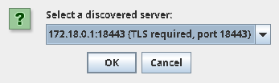
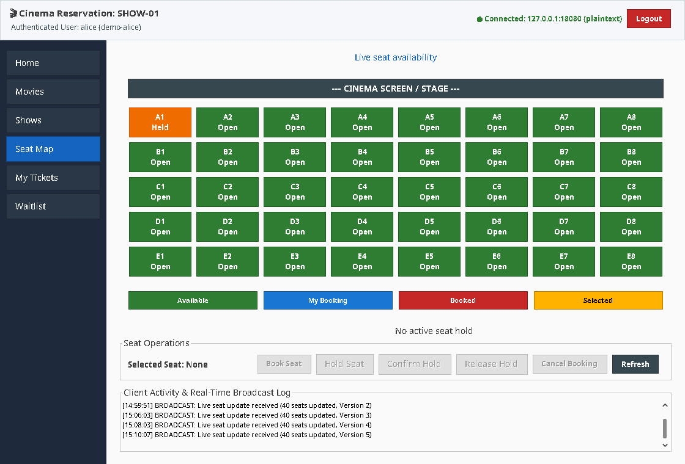
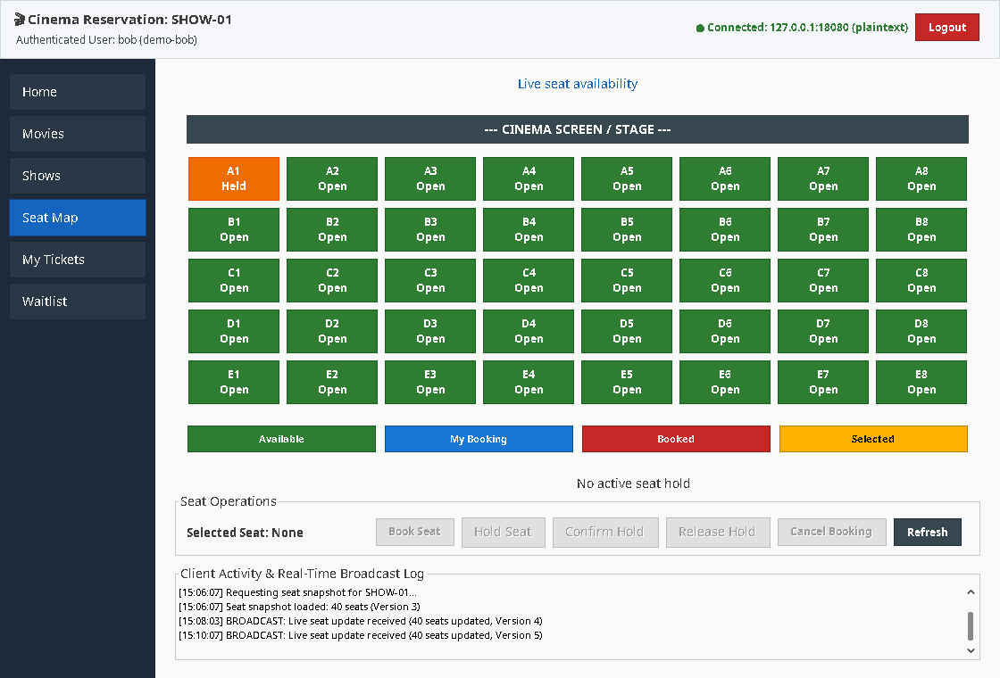
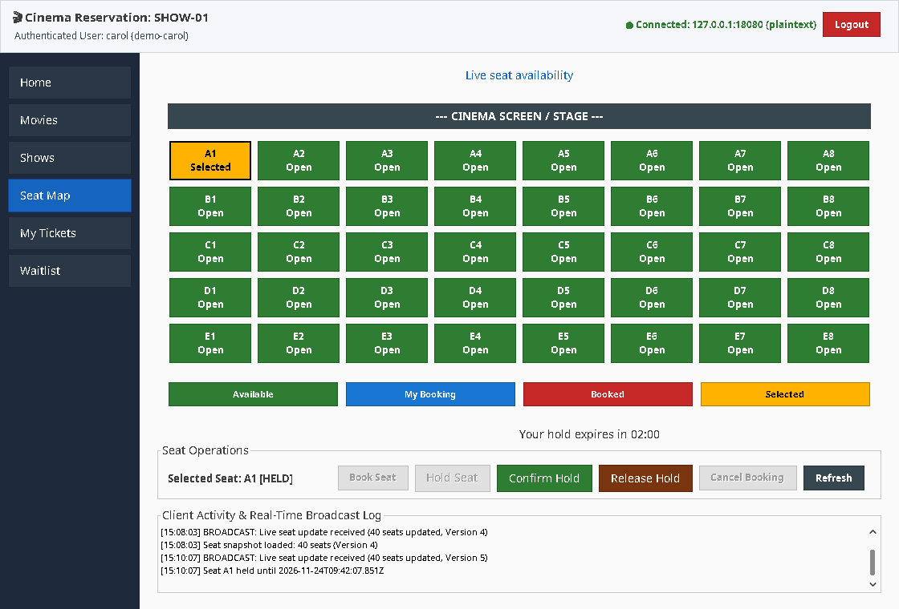

Outcome: Three separate Swing clients authenticated to the same loopback server.
Carol held seat A1, and Alice and Bob displayed the server-pushed held state without refreshing.
Captures of all three client windows are included in this report.
Member 05 scope delivered
Swing navigation for Home, Movies, Shows, Seat Map, My Tickets, Waitlist, and role-gated Admin.
Customer workflows for catalog browsing, seat selection, booking/hold/release/confirmation, tickets, booking history, and waitlist.
Asynchronous JSON/TCP client requests and server event updates, with Swing presentation changes applied on the Event Dispatch Thread.
UDP discovery and an explicit TLS 1.3 client path using a configured truststore; secure connection failures do not fall back to plaintext.
Accessible connection/loading/error/empty states and distinct seat styling for open, held, booked, and selected states.
Three-client demonstration
Item
Observed result
Server
Local NIO server bound to 127.0.0.1:18080; state was in memory.
Clients
Three independent Swing client processes authenticated as alice, bob, and carol; three TCP connections were established concurrently.
Action
Carol placed a 120-second hold on A1 in SHOW-01.
Propagation
Alice and Bob received the live seat update and rendered A1 as Held; their activity logs show the updated event versions.
Visual correction
The live check exposed blank sidebar labels under the platform Look and Feel. The navigation now uses the existing cross-platform ThemedButton, and a regression assertion covers selected/unselected colors.
Result after the UI and transport fixes: 137 tests, 0 failures, 0 errors, 0 skipped; BUILD SUCCESS.
The suite includes client TLS trust/rejection/no-downgrade checks, event dispatch, navigation, protocol contracts, authentication/authorization, booking, and server integration tests.
U14 secure-client follow-up
A separate TLS-required localhost server was started with a temporary PKCS12 certificate containing the 127.0.0.1 identity. The desktop client discovered the server, displayed “TLS required,” and completed a trusted TLS 1.3 login after selecting the loopback address. UDP discovery returned the required-TLS flag and secure port. The first idle-session check exposed that the handshake timeout was still applied after the TLS handshake; this was corrected, and a regression test now verifies the TLS client stays connected beyond that timeout and can still exchange a request.

Live discovery dialog showing the server’s TLS-required flag and secure port.
Security and transport limitations
The three-client concurrency screenshots use plaintext TCP bound to loopback only. They demonstrate
authentication, authorization/session behavior, and real-time updates; those screenshots do not
demonstrate TLS. A separate trusted localhost TLS 1.3 client login was also validated. The local
demo password and temporary certificate passwords are intentionally omitted.
Demo accounts and booking data are in-memory and reset when the server restarts. Demo credentials are for local testing only.
The TLS smoke test used a temporary local truststore and loopback certificate; it did not test a production CA or a real LAN deployment.
For the loopback-only server, discovery advertised the container's local interface address; the TLS client was pointed to 127.0.0.1 for the loopback-bound listener.
The 8080 port was already occupied by an unrelated listener, so that listener was left untouched and the demo used 18080.
Team ownership matrix
Roles below reproduce the repository's contribution guide. They describe package ownership, not independent verification of each member's individual commits or pull requests.
Member
Documented focus
Primary ownership
01
Architecture and Java NIO server transport
Server socket, selector loop, connection lifecycle, server-side networking
02
Protocol contracts and serialization
Shared DTOs, JSON protocol, session abstraction and frame contracts
03
Booking engine and concurrency
In-memory reservations, worker dispatch and inventory state
04
Authentication and security
Credentials, authenticated sessions, authorization and request validation
05
Client networking and Swing presentation
TCP client, Swing UI, seat grid and event rendering
Repeatable local demonstration
Set SEATSYNC_DEMO_PASSWORD to a local-only test value without adding it to source control or logs.
Run the server on loopback, for example mvn exec:java@server -Dexec.args="127.0.0.1 18080".
Launch three clients using mvn exec:java@client -Dexec.args="127.0.0.1 18080" and log in as alice, bob, and carol.
Open Seat Map in each client. Hold A1 from Carol and observe A1 change to Held in the other two clients without a manual refresh.
State the limitation clearly: this localhost run uses plaintext TCP; password hashing does not encrypt data in transit.
The implementation and report are currently in the local working tree on upgrade/04-ui-navigation; they have not been committed or submitted as a pull request.
Live client evidence - Alice

Alice is connected to 127.0.0.1:18080. The live update log advances to version 5 and A1 is shown as Held.
Live client evidence - Bob

Bob is connected concurrently. The live update log advances to version 5 and A1 is shown as Held without refreshing.
Live client evidence - Carol

Carol owns the active A1 hold; the client displays the hold countdown and enables confirmation or release.